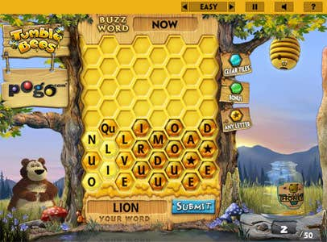

| The Basics |
 |
||
On sunny days like today, all good little bees make honey... In Tumble Bees, your goal is to help the bees make honey by spelling as many words as you can before the board fills with letters. Longer words are worth more! You spell words by clicking on groups of touching letter tiles. Once you spell a word, click the SUBMIT button or right-click. Proper names, slang, and abbreviations cannot be used. Letters drop continuously from the top of the board into the shortest columns. The longer the game goes on, the faster they drop. Use a blue tile in a word to clear tiles from the board. The game ends when the board fills with letter tiles, or when you fill the honey jar. If you fill the jar completely, you win and you'll have a chance at the bonus round. In the bonus round, you make progress by finding 5-letter words (or longer.) but you can still make shorter words to help clear tiles from the board. Remember though the goal of the game is to spell enough words to fill the honey jar, not to completely clear the board of letter tiles.
|